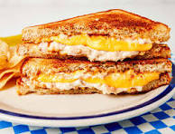

The Ultimate Tuna Melt

Description
This simple, yet delicious, tuna melt can be the highlight of your day!
Ingredients
For the Tuna Salad:
- 1/s smll shallot
- 1 medium stalk celery or scallion
- 1 dill pickle spear
- 1 (5-ounce) can oil- or water-packed tuna fish
- 1/4 cup mayonnaise
- 1/8 teaspoon kosher salt
- 1/8 teaspoon freshly ground black pepper
- 1/8 lemon wedge
For the Sandwich:
- 2 tablespoons unsalted butter or mayonnaise
- 1 large tomato, such as beefsteak or heirloom
- 4 sandwich bread slices, such as sourdough or rye
- 4 slices sharp cheddar cheese
Steps
- If using butter, let 2 tablespoons unsalted butter sit at room temperature to soften. Meanwhile, make the tuna salad.
- Prepare the following, adding each to the same medium bowl as you complete it: Finely chop 1/2 small shallot (about 1 tablespoon). Finely chop 1 medium celery stalk or scallion. Finely chop 1 dill pickle spear (2 heaping tablespoons). Drain 1 (5-ounce) can oil- or water-packed tuna fish well.
- Add 1/4 mayonnaise and use a fork to break the tuna down into flakes and mix everything together. Add 1/8 teaspoon kosher salt, 1/8 teaspoon black pepper, and the juice from 1 lemon wedge. Mix with the fork until combined.
- Heat a large skillet over medium-low heat. Meanwhile, assemble the sandwiches.
- Cut 1 large tomato crosswise into 1/4-inch thick slices. Spread the butter or 2 tablespoons mayonnaise evenly onto 1 side of 4 sandwich bread slices. Flip 2 of the slices over. Top each one with 2 sharp cheddar cheese slices. Top with the tomato slices. Divide the tuna salad over the tomatoes and spread into an even layer. Close the sandwiches with the remaining 2 bread slices buttered-side up.
- Place the sandwiches in the skillet and cook until golden brown and the cheese is melted, 3 to 4 minutes per side. Transfer to a plate or cutting board and cut the sandwiches in half before serving.
Home